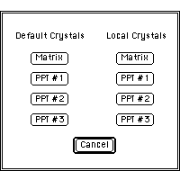

Desktop Manual
Desktop Manual
Defaults: Data Transfer Between Windows:
Desktop Microscopist enables the user to make slight variations of basic
parameters to more effectively compare with experimental information. The
program allows different data sets to be displayed, while providing a straightforward
mechanism for the transfer of data from window to window. This is accomplished
through the use of Default information. The primary information necessary
to run a particular object is stored in a Default file. This file is transferred
to each new window or table as it is opened.

There are three methods for setting and retrieving Default information.
- The first method is the defining of the primary parameter set of four
crystals, three orientation relationship sets, four crystal elastic constants,
four crystal shapes, electron beam parameters and a default x-ray beam.
This is done by defining the parameter set before any object windows
are open.
- The second method for defining default parameters is the use of the
Dump options.
- The third method for setting Default parameters is the <Default
<-Current> button found in the Default<->Current
Dialog Box Clicking on this button changes the default settings to those
of the current object.
- There are three complimentary methods for setting the local parameters
to the default set. The first is simply to open a new window of the desired
object. The second is to click on the Load button. This brings up
the same dialog box as the Dump option, but in this instance the
selected values are inserted into the current dialog box information. The
third method is to use the <Default->Current>
button, this resets the current window information to the Default information.
Note: The <Default->Current>
button and the <Default
<-Current> button are mutually exclusive. This is because selecting
one of buttons replaces the information needed to utilize the other. If
the defaults values are set to the current values, selecting Revert to Previous
does nothing, as the current and default values are equivalent.
Preference File; Storing Initial Set-Up Information:
New with version 2.0, Desktop Microscopist allows the user to save a current
set-up into a preference file. This set-up includes Search Paths, all crystal
data, oreintations, orientation relationships, Picture Transfer Modes, Beam
Definitions, spot shape preferences, structure factor set-ups, and any additions
or changes to the Atomic Scattering and Crystal Shape libraries. This ability
means that it is easy to start up from where the user last left off and
more importantly, upgrading will no longer require resetting the Search
Paths and reinputting any Atomic Scattering or Crystal Shapes.
The Preference file is created when the program is first launched. The preference
file is stored in the System Folder's Preferences Folder in a file
called Desktop Micrsocopist Prefs. The preference file is automatically
updated whenever the Search Paths, Atomic Scattering or Crystal Shape libraries
are altered. However, changes to the Default parameters must be actively
inserted into the preference file. To update a the preference file to the
current Default setting go the the menu item:Set
Default<->Local. found under the Parameter Menu, brings up the
Default<->Current
Dialog Box .
Linking:
A new feature with Desktop Microscopist 2.0, is the ability to link windows.
When windows are linked they maintain the same crystals, the same orientation
relationships, the same stage orientation, and the same beam orientation.
This allows the user to quickly update various representations of the experimental
situation efficiently, and to gain some insight into the relationship between
reciprocal space and the corresponding real space representation. Linking
can be either dynamic or static. If, dynamic linking is active, all linked
windows are immediately updated when any of the linked objects are altered
with respect to crystal definition, orientation relationship, stage orientation
or beam orientation. If, static linking is active, the window is updated
when it is brought to the forefront with respect to the accumulated changes
since it was last updated. Selection of the linking method is most commonly
determined by processor speed. All windows which are opened after the Linking
flag is set in the Set
Misc. Parameters dialog box are Linked. Those windows opened before
linking was activated will remain static windows. Linking is found by going
to the Set Misc. Parameters:
menu item found under the Parameter Menu.
See Overbars or Negative
Miller Indices:
Printing:
Printing in Desktop Microscopist is not a typical "What You See Is
What You Get" (WYSIWYG) Macintosh interface. This is particularly true
of the table information which is formatted to utilize the full print page.
Plots and graphs may be labeled through the use of the Text. Crystal summaries
can be printed, however there are no other methods for obtaining a printout
of crystallographic data that has been input, or of the stored information.
Printing is via the standard methodology of selecting Print
under the File Menu.
File input and output is standard. Crystal files can be opened from the
File Menu. However, when opened from the File Menu, the crystal information
is inserted into the the currently active window's Matrix Crystal. If no
windows are open, the crystal information is inserted into the Default Matrix
Crystal object. The only other file type which can be accessed from the
File Menu is a Desktop Microscopist File. These files store Desktop Microscopist
objects. When such a file is opened the data is automatically inserted into
an appropriate Desktop Microscopist object and the correct window or table
is opened. Double clicking on either file type will launch Desktop Microscopist.
PICT ;files can be opened in SAD and derived objects. Importation of a PICT
file is accomplished by selecting the Place... option under the File
Menu. The picture is automatically placed by Desktop Microscopist and
can subsequently be moved to the desired position.
Author:J. Stanley
Distributed
By: Virtual Labs
Last Updated:June 6,1996